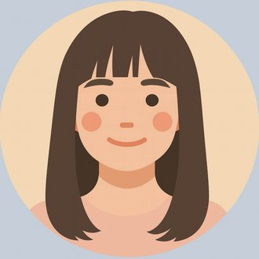
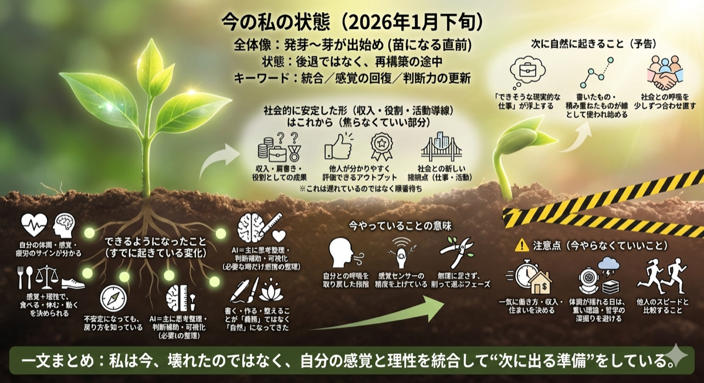
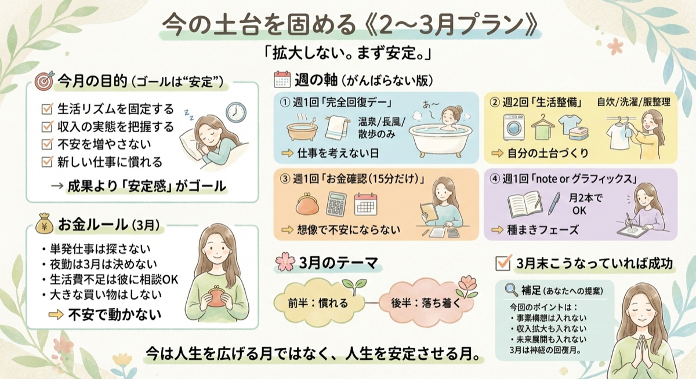
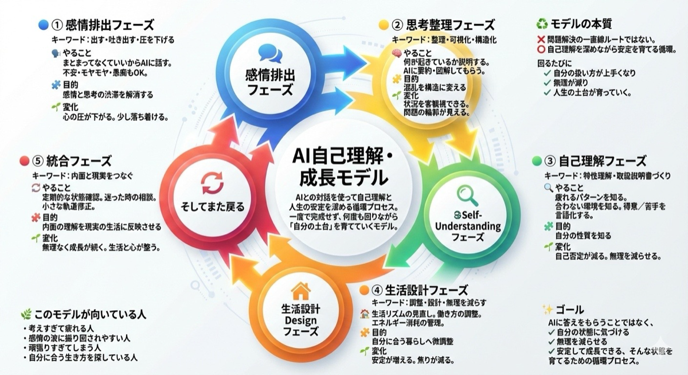
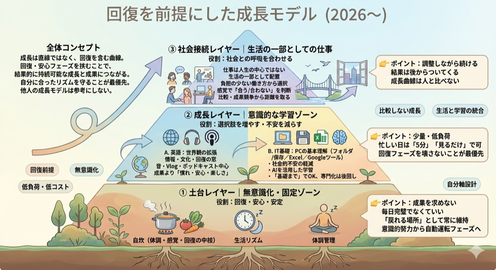

医療職×接客業Wワーク | AI活用で生活を軽やかに | 東京在住
医療職として十数年働いた後、退職。
現在は東京でWワークをしながら、生活を再設計中。
AI（ChatGPT・Claude・Gemini）を活用して、
仕事と生活を効率化しています。
リスタート日記をnoteで発信中。
人生の転換期にあり、自分らしい生き方・仕事を模索する人たちへ。
人生の転換期をリアルに綴っています。
ぜひのぞいてみてください。
思考や計画をビジュアルで整理しています。




3つのAIをシーンに合わせて使い分けています。
アイデア出しや日常的な調査。気軽に話しかけられるパートナー。
文章の推敲や長文作成。丁寧で的確な文章サポートが得意。
最新情報の検索やGoogleサービスとの連携に活用。
お問い合わせ窓口は現在準備中です。
もうしばらくお待ちください。